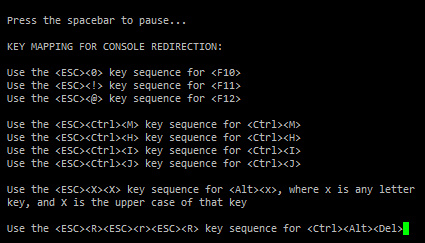

IPMI¶
@2015-03-15 新版功能: 创建
在 @2015-03-15 版更改: 增加 BMC reset & lan access
IPMI 原本是一种 Intel 架构的企业系统的 周边设备所采用的一种工业标准。
使用到的命令为 ipmitool 。man ipmitool 获取详细的文档。常用参数如下：
- -I [open|lan|lanplus] 指定使用的IPMI接口，lan/lanplus 是网络连接方式。
- -H <address> IPMI 服务器地址
- -U <username> IPMI 服务器用户名
- -y <hexkey> IPMIv2 认证密钥
- -P <password> IPMIv2 服务器密码
需要注意的是，在通过网络接口使用 IPMI 时，任何人在任一个网络可达的地方即可完全 控制系统的电源状态、获取系统的平台信息等等。等同于在坐在服务器前面。 因此，IPMI 的设置一定要注意安全性：一定要设置密码，密码绝对不可以泄漏。 IPMI v1.5 时的密码是明文传输，最好禁用。
重要
安全方面的更多细节请参考 All the IPMI that's fit to print。
常用命令¶
请在清楚这些命令的目的和后果后在再对线上系统进行相关操作。 如果没有指定 -H 选项，则 ipmi 会通过本地接口（等价于 -I open）执行相关的操作 （可能需要加载相关的驱动，例如 modprobe ipmi_devintf ）。
- ipmitool -H ipmi.ip -U root -P pass power off (关机，直接切断电源)
- ipmitool -H ipmi.ip -U root -P pass power soft (软关机，如同按一下电源开关)
- ipmitool -H ipmi.ip -U root -P pass power on (开机，启动电源)
- ipmitool -H ipmi.ip -U root -P pass power reset (硬重启)
- ipmitool -H ipmi.ip -U root -P pass power status (获取当前电源状态)
- ipmitool -H ipmi.ip -U root -P pass user set password 2 XXX (修改密码)
- ipmitool -H ipmi.ip -U root -P pass lan set 1 ipaddr X.X.X.X (修改 IPMI 接口地址)
- ipmitool -H ipmi.ip -U root -P pass lan set 1 netmask X.X.X.X (修改 IPMI 接口掩码)
- ipmitool -H ipmi.ip -U root -P pass lan set 1 defgw ipaddr X.X.X.X (修改 IPMI 接口网关地址)
其中对 IPMI 接口地址的相关调整在有条件的情况下最好不要远程修改，而是在宿主机的 操作系统上（即通过 -I open）修改。
在比较老的设备上，ping IPMI 地址可能会没有响应，但可以执行正常的 IPMI 操作。
功能介绍¶
[bmc|mc] 底板控制器信息
$ ipmitool bmc info Device ID : 32 Device Revision : 0 Firmware Revision : 1.92 IPMI Version : 2.0 Manufacturer ID : 674 Manufacturer Name : DELL Inc ... ...
重启 BMC：
$ ipmitool mc reset cold ipmitool mc reset cold
chassis 主板及电源信息
$ ipmitool chassis status System Power : on Power Overload : false Power Interlock : inactive Main Power Fault : false Power Control Fault : false Power Restore Policy : previous Last Power Event : Chassis Intrusion : inactive Front-Panel Lockout : inactive ... ...
lan
$ ipmitool lan set 1 access on # 终止超时会话 Set Channel Access for channel 1 was successful.
power 电源控制 power [status|on|off|cycle|reset|diag|soft]
$ ipmitool power status Chassis Power is on
sdr 传感器数据记录
$ ipmitool sdr CPU 1 Temp | 11 degrees C | ok CPU 2 Temp | 13 degrees C | ok PS 1 Temp | 30 degrees C | ok ... ...
sel 系统事件日志
$ ipmitool sel SEL Information Version : 1.5 (v1.5, v2 compliant) Entries : 8 Free Space : 8064 bytes Percent Used : 1% Last Add Time : 12/06/2013 08:52:36 Last Del Time : 11/24/2012 03:47:49 Overflow : false Supported Cmds : 'Reserve' $ ipmitool sel list ... ... 6 | 11/29/2013 | 10:20:42 | Drive Slot #0x84 | Drive Present | Deasserted 7 | 11/29/2013 | 10:20:47 | Drive Slot #0x84 | Drive Present | Asserted 8 | 12/06/2013 | 08:52:36 | Battery #0x11 | Failed | Asserted
sensor 传感器
$ ipmitool sensor CPU 1 Temp | na | degrees C | na | na | na | na | 80.000 | 85.000 | na CPU 2 Temp | na | degrees C | na | na | na | na | 80.000 | 85.000 | na ... ...
session 会话
$ ipmitool session info all session handle : 32 slot count : 5 active sessions : 1 user id : 2 privilege level : ADMINISTRATOR session type : IPMIv1.5 channel number : 0x01 console ip : 10.2.11.2 console mac : 10:00:00:3c:1b:16 console port : 50056 ... ...
shell 交互接口，输入 ipmi 相关命令
$ ipmitool shell ipmitool> quit
sol Serial-Over-LAN 接口 相当于远程 Console，重定向系统串口 I/O 到网络。 可能需要通过 lanplus 接口访问（指定 -I lanplus）。
sol info 获取信息 sol activate 激活接口 sol deactivate
使用 SOL 接口时，有些功能键不能直接输入，对 Dell 的设备参考
exec 执行批量命令
kipmi0 占用 100% CPU 的问题¶
@2014-08-27 新版功能: 创建
最近在某台设备上发现 kipmi0 这个内核线程会占用 100% CPU。
最快的临时解决办法是：
# rmmod ipmi_si
显然，该方法是以牺牲一定的功能为代价。根本解决办法需要清楚为什么 kipmi0 会占用 CPU 资源呢？摘录部分内核文档 IPMI.txt 如下：
If your IPMI interface does not support interrupts and is a KCS or
SMIC interface, the IPMI driver will start a kernel thread for the
interface to help speed things up. This is a low-priority kernel
thread that constantly polls the IPMI driver while an IPMI operation
is in progress. The force_kipmid module parameter will all the user to
force this thread on or off. If you force it off and don't have
interrupts, the driver will run VERY slowly. Don't blame me,
these interfaces suck.
Unfortunately, this thread can use a lot of CPU depending on the
interface's performance. This can waste a lot of CPU and cause
various issues with detecting idle CPU and using extra power. To
avoid this, the kipmid_max_busy_us sets the maximum amount of time, in
microseconds, that kipmid will spin before sleeping for a tick. This
value sets a balance between performance and CPU waste and needs to be
tuned to your needs. Maybe, someday, auto-tuning will be added, but
that's not a simple thing and even the auto-tuning would need to be
tuned to the user's desired performance.
可以看到，本质原因是由于部分 IPMI 接口不支持中断，只能通过轮询来获取相应的 信息。通过设置模块参数能控制每次轮询最多持续的时间。该参数名为 kipmid_max_busy_us。如果内核模块已经加载，可以使用如下命令调整：
# echo 100 > /sys/module/ipmi_si/parameters/kipmid_max_busy_us
如果希望模块加载时自动设置该参数，则可以配置如下文件：
# cat /etc/modprobe.d/ipmi.conf
options ipmi_si kipmid_max_busy_us=100
另外，从上面文档中可以看到，尽管 kipmi0 会占用比较多的 CPU 资源，但该内核线程 的优先级设置比较低，对系统性能的冲击是有限的。